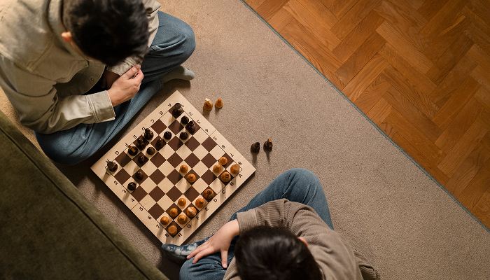
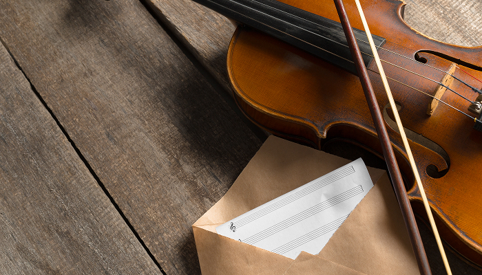

사회공헌
사회공헌
home > 사회공헌 > 문화나눔
문화나눔
Cultural Sharing
문화나눔
-
동서식품은 문화와 예술이 지닌 힘을 통해
인재를 키우고 더 나은 세상을 향한 가치를 함께 만들어갑니다
-
-
여성들의 문화활동을 지원하는
삶의 향기 동서문학상 -
여성들이 문학활동을 지원하기 위해 동서식품이 제정한 문화후원사업입니다.
여성들의 일상과 삶의 이야기를 문학으로 담아내는 국내 최대 규모의 여성 대상 공모전으로 1990년부터 꾸준히 이어져 오고 있습니다. 일상의 소소한 순간부터 깊은 감정까지, 누구나 마음을 담아 글로 표한할 수 있는 열린 문학의 장입니다.
-
여성들의 문화활동을 지원하는
-

-
국내 바둑 최강자를 가리는
맥심커피배 입신최강전 -
맥심커피배 입신 최강전은 국내 정상급 프로 바둑 기사들이 모여 자존심을 걸고 겨루는 대표적인 바둑대회입니다.
깊은 집중력과 치열한 수읽기 속에서 단 한 수의 묘수가 판세를 뒤집는 극적인 승부가 펴쳐지며, 매년 많은 바둑 핀들의 관심을 모으고 있습니다. 맥심커피가 전하는 뜻한 휴식처럼, 바둑의 깊은 여운과 아름다움을 함께 느낄 수 있습니다.
-
국내 바둑 최강자를 가리는
-

-
함께하는 삶의 향기
동서커피 클래식 -
동서커피클래식은 커피처럼 깊고 풍성한 감성을 전하는 클래식 음악 공연입니다.
2008년부터 시작되어 국내외 유수의 아티스트들과 함께 수준 높은 연주를 선보이며, 일상 속 여유와 문화의 가치를 전해왔습니다. 따뜻한 커피 한 전과 함께하는 동서커피클래식은 관객들에게 음악으로 마음을 위로받는 특별한 시간을 선사합니다.
-
함께하는 삶의 향기